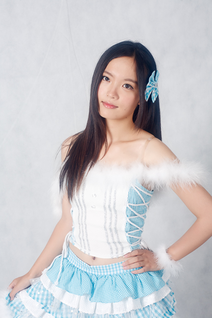
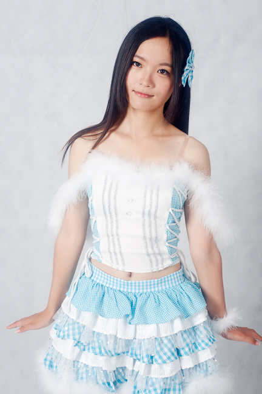
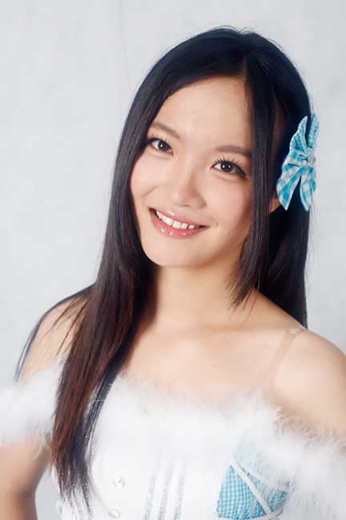
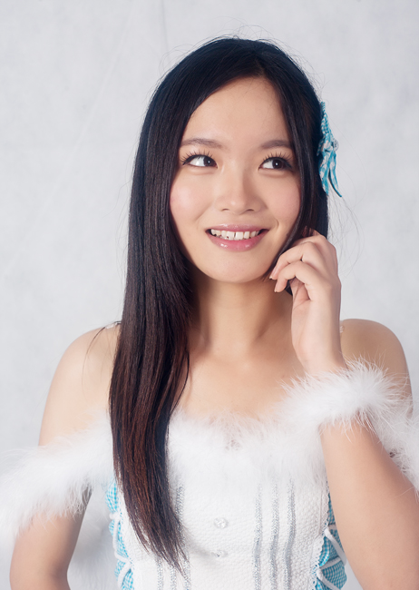
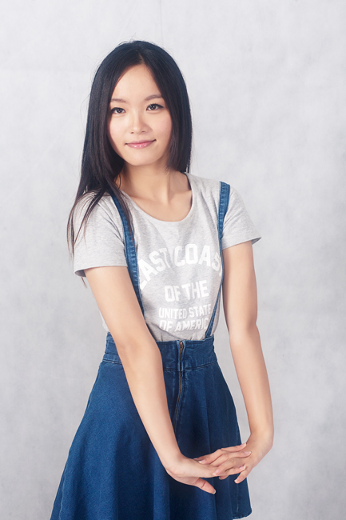

当我停好车后，走向南禅寺的ACG工作室时，空气中的热浪一阵阵袭来，8月正是锡城最热的时候，走在路上就象蒸桑拿。虽然只要走过一条街，仅几分钟的路程，但也让我出了一身汗。
去之前一天，我就把纽摄教材找出来翻了下关于室内摄影灯光调整的部分。我很少参加棚拍活动，一般都是自然光拍摄比较多。碰到这种没有把握的时候翻一下书本还是有必要的，纽摄教材就象一本摄影百科全书，基本上涵盖了我们所需要了解的所有问题。买一套放在家里备着作为工具书随时翻阅还是很有用的。
正因为很少有机会参加棚拍，所以我想在室内灯光拍摄方面积累些经验，这也是我答应群里小伙伴们棚拍邀请的原因。
来到ACG工作室后我径直走进了摄影棚，这里没有我想象中般堂皇，但相应地价格也比较便宜。还好，有摄影灯三只，包括一只脚灯虽然我没用到，有背景布，有夏天必须要的空调，该有的都有了这也够了。
事先我已知道这次的拍摄任务是给模特拍“生写”。我初听到生写时也是丈二摸不着头脑，生写是何物啊？当时模特给我的答复，就是需要拍头肩照、半身照、大半身照三种类型。还给我看了日本 AKB48 成员的生写样照。其实很简单，就是在白背景前拍几张不同幅面的照片而已。
后来我在网上搜了下“生写”，解释如下：生写，即生写真的简称。生写真一词来自日文（生写真）。是指摄影后的人物照片除冲洗之外，未经过任何修改的人物照片或未经过商业性质处理的附属照片。一般都将生写真一词等同于“公式照（官方照）”在使用。
生写真尺寸一般为L判（日文），相当于中国的5英寸照片（W89mm×H127mm），稍小一点，一般为W88mm×H126mm 。还有2L判（W127mm×H178mm）。就实际发行来说，并不局限于这两个日本尺寸。
好了，趁模特还没到，我要先做一些正式拍摄前的准备工作。我把左灯调为主灯，功率是右灯的三倍左右，两灯距离背景差不多远，这样可以得到1:3的光比。
在拍摄前我还让模特配合用测光表测好光，调整灯光功率，尽量把光圈调到F8左右，因为较小的光圈能保证一定的景深，更容易拍到清晰的照片。
另外，我还请模特帮忙手持一张柯达灰卡，将相机白平衡自定义到准确数字。因为我不会再改动灯光了，所以这个自定义白平衡可以一直用到拍摄结束。
好了，一切都已准备好，来吧，让我们开始拍摄吧。
（模特：禾颜）
图片




